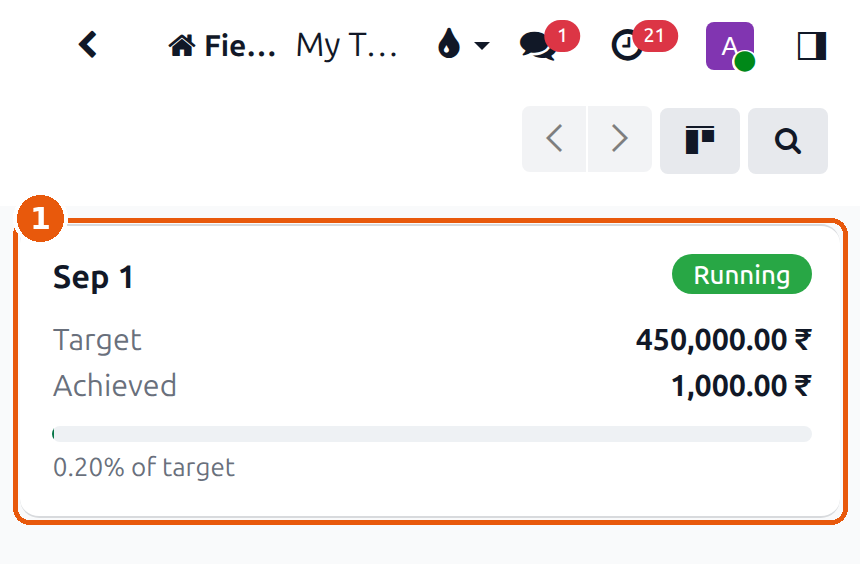

Guide for Field Executives
Everything you do in a day — start your day, visit clinics, write down the cases the doctor gives you, collect payment, and close your day. One screen, one button at a time.
A.Before you begin
Three things, once.
- Your login and password. The office gives you these. They are yours — do not share them.
- Location must be ON. The app records where you are when you reach a clinic. If location is off, you cannot start a visit.
- Use your phone's browser (Chrome). You do not need a computer for any of this.
Your visits, your travel, your cases, your money, your target. You cannot see another executive's records, and they cannot see yours.
B.Your day, from start to finish
This is the whole loop. Everything else in this guide is one of these eight steps explained.
1.Sign in

- Email or username — the one the office gave you.
- Password — tap the eye at the end of the box if you want to check what you typed.
- Log in.
Your phone will stay signed in. You do not have to type this every morning.
2.Find Field Work
After signing in you land in Field Work. These are the only menus you have, and every one of them is about your own work.

| Menu | What it is |
|---|---|
| My Day | Today's clinics and every button you need. This is the screen you live on. |
| My Day Sheets | Your finished days, after your manager has looked at them. |
| My Visits | Every clinic visit you have made. |
| My Cases | Every case slip you have written. |
| My Travel | Your daily kilometres and travel claim. |
| My Deliveries / My Work to Deliver | Work you are carrying out to clinics. |
Everything above is also a button on My Day. Open My Day in the morning and stay there all day.
3.The My Day screen

- Today's date. Use the arrows beside it to look back at the last few days if you forgot to write something up. You can never move forward to tomorrow.
- Your day so far — visits done, cases registered, case value, money collected. These fill in by themselves as you work. You never type them.
- Start my day. Nothing else works until you press this.
- DO — the things you do at the door: travel, quick entry, track an order, look up a doctor, scan, deliver, collect.
- MY — your own pages: visits, cases, travel, cash, targets, deliveries.
4.Start my day

Press Start my day. The card turns green.
- On duty, with the time you started and how long you have been working.
- The same button now says End the day. Press it only when you are finished for the day.
Your login is not linked to your employee record. Ask the office or HR to fix it — you cannot do it yourself.
5.Write down your starting kilometres
Do this before you leave, while the bike is still in front of you.

- Vehicle — Two Wheeler, Four Wheeler or Public Transport. This decides the rate you are paid per kilometre.
- Start Reading — the number on your odometer right now.
- Start Photo — take a photo of the odometer.

- The reading typed in.
- The photo taken.
- Press Save — the big green button at the bottom.
Then press Start the Day at the top of the form.

- The status reads On the Road. Your kilometres are being counted from here.
If you skip it you will see "A photo of the opening reading is required." Take the photo and press Start the Day again.
6.Today's clinics

Scroll down past the buttons. Every clinic on your round today is a card, in order.
- The clinic name, the town, and why you are going ("Routine Round").
- The address, and three shortcuts: Navigate opens your map app, Call rings the clinic, Chat opens WhatsApp.
- The button on the right. It always does the one right thing for that card — you never have to choose.
📍 = I'm Here · ✓ = Finish · 👁 = View (already done)
You can also tap the card itself to open the full visit.
Your round has not been set up. Ask your manager to plan your beat — then your clinics appear here every morning on their own. You never create a visit to say you intend to go somewhere.
7.At the clinic — press "I'm Here"
Press it when you are standing at the clinic, not in the car on the way.

- The card now says At clinic.
- The button has become Finish (✓) for when you are leaving.
Turn on Location for your browser, wait a moment for the arrow to appear at the top of your phone, then tap again. A visit cannot be started without it.
You are never blocked. The visit records that you checked in away from the clinic, and asks you for a short reason before you can close it — for example "met the doctor at their other branch". Write the truth; it is a note, not a punishment.
You will see this on most clinics today, and it is not your fault: almost none of them have been pinned yet. Your check-in is still recorded — the app simply cannot say how near you were.
If you are standing in the clinic, open the visit and press Pin Clinic Here. That fixes it for you and for everyone who visits after you.
8.Write the cases the doctor gives you
One slip per patient. Fill it in while the doctor is still in front of you.

- Finish Visit — do not press this yet.
- The three dots. On a phone the other buttons hide here. Tap it and choose Add Case.
- Purposes — tap as many as apply: routine round, case collection, delivery, payment, complaint, new doctor, marketing.

- Patient name.
- Age — use the − and + buttons, or tap the number and type it.
- Gender.
- Priority — leave it on Normal unless the doctor asks for it faster.
- Add a line — this is where you say what is being made.

A full-screen list of everything the lab makes opens.
- Tap the appliance the doctor asked for. Use the search icon at the top if the list is long.

- The line. Set U/L (upper arch, lower arch or both), the quantity, and the colour if the doctor chose one. Add another line if there is more than one appliance.
- When the slip is complete, press Submit Case.
You have not added a line yet. Go back to Add a line and choose the appliance.

- The slip now reads Submitted.
Go back to the visit and add the next patient the same way. A doctor who gives you five cases means five slips.
Press Reopen, correct it, and submit again. You can do this right up until you finish the visit — after that, the office has it.
9.Say what happened, then finish

- Number of cases — how many cases you are carrying out of this clinic, counted by hand. Use − and +.
- What happened — tap every one that applies: cases collected, reworks collected, delivered, payment received, follow-up needed, doctor not available, complaint logged, or no requirement today.
A second counter appears for how many reworks you took. Fill it in.

- Payment collected — tap the quick amounts (+100, +500, +1000, +5000) or type the exact figure.
- Received as — Cash, Cheque or UPI / Online. You must say which.
Then press Save, and Finish Visit at the top.
"Record what happened…" — you have not tapped any outcome.
"… case(s) have not been submitted" — a slip is still open. Submit it,
or delete it if you started it by mistake.

- The visit is Completed. Your case slips have gone to the office as orders, and they are being checked now.
On a completed visit you may still change the number of cases, the outcome chips and the payment — because those are often settled a minute after you walk out. Everything else is locked.
10.Check your numbers, then move on

- Your day so far — 1 of 5 visits, 1 case registered, the case value and the money collected. All of it counted for you.
- Your target ring — how much of this month's number you have reached.
Go to the next clinic and repeat steps 7 to 9.

- The finished clinic is marked Done and moves to the top of the list, with what it produced — the cases and the money — on the card.
11.The other buttons
Track order — "where is my patient's work?"

The question every doctor asks at the counter. Tap Track order.
- Type anything you know — the patient's name, the clinic, the appliance, or the order number.
- The answer. Tap a row to see the full journey: confirmed, in the lab, work finished, out for delivery, delivered, invoiced — with who made it.
Only work that is still open appears. Finished and invoiced jobs are not listed.
Doctors / Clinics — who else is on this road

- A clinic on your route, with what it still owes and how many orders are open. Tap the star to keep your regulars at the top.
- New visit adds that clinic to today, even if it was not on your plan. Use this when you make an extra stop.
Quick entry — many cases at once

For the evening, when you have eight impressions in the bag from one doctor and do not want to open eight slips.
- Doctor / Clinic — choose it once.
- One line per patient — name, appliance, U/L, priority.
- Submit all for verification — leave this ticked.
- Press Create Cases.
If you enter cases days later the app asks you to give a reason. Enter them the day you collect them and it never asks.
Cash in — money with no visit behind it

Money does not always arrive with the paperwork. A doctor settles an old bill while you are there for something else, a receptionist hands you an envelope on the way past, somebody pays for a case another executive delivered last week.
Before, the only way to record that was the payment box on a visit — so you had to invent a visit that never happened. Now you do not. Tap Cash in under DO.
- Which doctor or clinic the money came from.
- How much.
- How it was paid — Cash, Cheque or UPI / Online.

- The amount. Add a note if it helps — "old bill settled at the door".
- Press Record.
The same three facts a visit records, so it counts the same: in today's collected total, on your day sheet, towards your collection target, and in your manager's report. And if it was cash, it goes into your float by itself — you do not need Cash into My Float as well.

- Today's collected total has moved — without a visit being invented to carry it.
Record it when the payment is in your hand, not when it is promised. A cheque or a UPI payment reaches the bank on its own; only cash goes into your float.
Money you collected — put it in your float

When you collected cash at a clinic, tell the system you are carrying it. On the finished visit, tap the three dots and choose Cash into My Float.
- The amount that moved from the clinic into your hands.
- Posted — the office can now see the money is with you.
This does not replace handing the cash over. It records where the money is right now, so nobody has to ring you to ask.
A cheque or a UPI payment reaches the bank on its own. Only cash goes into your float.
My Cash

- Your float — the cash the office has given you, and what is left.
My Day also shows Cash in hand near the bottom, and warns you when money you collected has not yet been put into your float.
Recording it is not the same as giving it back. Hand collected cash to the office in the normal way — do not let it sit in your pocket overnight.
My Target

- This month's target and what you have achieved.
You cannot type your achievement, and you are not supposed to. It is counted from the visits you close and the orders they produce. Work the round and the number moves.
My Visits

Every clinic call you have made, newest first, with what each one produced — the cases collected and the money.
Use it when someone asks about a clinic you visited last week, or to check whether you have already been somewhere this month.
My Day Sheets

You do not write this. At the end of each working day your sheet builds itself from your visits, your travel and your attendance, and goes to your managers — first the Operational Manager, then the Marketing Manager.
Look here when a day comes back to you. The sheet will say what needs correcting. Fix it, and it goes back to them.
"No day sheets yet" simply means no day of yours has been closed and sent up yet. It fills in on its own.
12.Ending the day

Open Travel under DO one last time.
- End Reading — the odometer now.
- End Photo — photograph it, the same as this morning.
Press Save, then End the Day.

- The distance and the money. 48,263 − 48,210 = 53 km, and the claim at your rate. You never calculate this.
- The status is now Submitted — it is with your manager.

Go back to My Day and press End the day on the green card.
- It turns back to Not started yet and shows the hours you worked.
That is the whole day. Your day sheet is built for you overnight.
13.If something goes wrong
| What you see | What to do |
|---|---|
| "Location is off" | Turn on Location for your browser, wait for the arrow at the top of the phone, tap again. Needed for both I'm Here and Finish. |
| "This check-in was … m from the clinic. Add a short reason" | You checked in away from the clinic. Type a short honest reason and you can close the visit. |
| "GPS not checked — this clinic has no location on the map" | Nobody has pinned this clinic yet. If you are standing in it, open the visit and use Pin Clinic Here. That helps everybody after you. |
| "Record what happened at the clinic before closing the visit." | Tap at least one outcome under What happened. |
| "… case(s) have not been submitted" | A slip is still open. Submit it, or delete it if you started it by mistake. |
| "Say how the payment was received." | You entered an amount but not Cash / Cheque / UPI. Tap one. |
| "A photo of the opening reading is required." | Photograph the odometer before starting the day. |
| "Nothing planned for today." | Your round is not set up. Ask your manager to plan your beat. |
| "Not set up for attendance" | Your login is not linked to an employee record. Ask HR. |
| A clinic is missing from the list | You only see clinics on your own route. Ask your manager to add it to your beat. |
| You forgot to write up yesterday | Use the back arrow beside the date on My Day. You can go back a few days — not further, and never forward. |
14.Seven things to remember
- Start my day first. Nothing counts until you do.
- Press I'm Here at the door, not in the car.
- One slip per patient, and submit each one before you leave.
- Say what happened before you finish a visit — that is what your day is judged on.
- Photograph the odometer twice a day. No photo, no claim.
- Enter cases the same day. Tomorrow morning it is already a question.
- Cash you collected goes into your float the same day, and to the office as soon as you can. Money taken at a door with no visit behind it goes in through Cash in — never invent a visit to carry it.